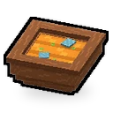
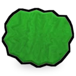
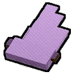

The Endless Dungeon
The Endless Dungeon: Rounds that never end. The deeper you go, the better the rewards.
Rounds
Each round is three enemies, then a boss.
Every round, enemies get a little stronger and faster.
Regions
Each stretch up to a chest is a region, with its own enemies, place and loot.
Higher tiers are harder and pay better. Find more regions to make your runs richer.
A chart in your map slot teleports you to its place once. On WANDER you go there after your first stretch.
| Greenshore Fields | Complete it in the Greenshore Story to unlock it. |
| Bandit Camp | Complete it in the Greenshore Story to unlock it. |
| Bandit Town | Complete it in the Greenshore Story to unlock it. |
| Cyclops Arena | Complete it in the Greenshore Story to unlock it. |
| Cultist Tower | Complete it in the Greenshore Story to unlock it. |
| The Dump | Beat the Garbage Man's wave 3. |
| Slime Grotto | Reach wave 10 in the Slime King's pit, alone or with a friend. |
| Dust Bowl | Complete it in the Red Desert Story to unlock it. |
| Sand Storm | Complete it in the Red Desert Story to unlock it. |
| Pyramids | Complete it in the Red Desert Story to unlock it. |
| Sand Cave | Complete it in the Red Desert Story to unlock it. |
| Research Station | Complete it in the Red Desert Story to unlock it. |
| Hellish Desert | Complete it in the Red Desert Story to unlock it. |
Regions
| Region | Biome | Tier | Chest floor |
|---|---|---|---|
| Greenshore Fields | Greenshore | 1 | Tier 1 |
| Bandit Camp | Greenshore | 2 | Tier 1 |
| Bandit Town | Greenshore | 3 | Tier 2 |
| Cyclops Arena | Greenshore | 4 | Tier 2 |
| Cultist Tower | Greenshore | 5 | Tier 3 |
| The Dump | Greenshore | 4 | Tier 2 |
| Slime Grotto | Greenshore | 5 | Tier 3 |
| Dust Bowl | The Red Desert | 6 | Tier 2 |
| Sand Storm | The Red Desert | 7 | Tier 2 |
| Pyramids | The Red Desert | 8 | Tier 3 |
| Sand Cave | The Red Desert | 9 | Tier 3 |
| Research Station | The Red Desert | 9 | Tier 3 |
| Hellish Desert | The Red Desert | 9 | Tier 3 |
Chests
Tier 1 chest
| Item | Quantity | Share |
|---|---|---|
 Gold Coin Gold Coin | 40–120 | 18% |
 Oak Plank Oak Plank | 8–16 | 12% |
 Iron Ingot Iron Ingot | 4–8 | 12% |
 Leather Leather | 6–12 | 10% |
 Rough Leather Rough Leather | 4–8 | 9% |
 Flax Fabric Flax Fabric | 6–12 | 8% |
 Minor Healing Potion Minor Healing Potion | 1–2 | 7% |
 Guppy Stew | 1–3 | 4% |
 Coal Coal | 40–80 | 6% |
 Maple Plank Maple Plank | 2–4 | 5% |
 Mithril Ingot Mithril Ingot | 1–2 | 3% |
 Rugged Hide Rugged Hide | 1–2 | 2% |
 Magic Chain Magic Chain | 1 | 2% |
 Magic Ring Magic Ring | 1 | 2% |
Tier 2 chest
| Item | Quantity | Share |
|---|---|---|
| Gold Coin | 150–350 | 10% |
| Maple Plank | 6–12 | 12% |
| Mithril Ingot | 4–6 | 12% |
 Cotton Fabric Cotton Fabric | 6–10 | 10% |
| Rugged Hide | 2–5 | 9% |
| Leather | 8–14 | 5% |
| Iron Ingot | 10–20 | 7% |
| Minor Healing Potion | 2–3 | 6% |
 Eye Ball Eye Ball | 2–3 | 5% |
 Ipe Plank Ipe Plank | 2–4 | 5% |
 Adamantite Ingot Adamantite Ingot | 1–2 | 3% |
 Nettle Fabric Nettle Fabric | 1–2 | 3% |
 Maple Bow Maple Bow | 1 | 2% |
 Mithril Sword Mithril Sword | 1 | 2% |
 Mithril Helmet Mithril Helmet | 1 | 2% |
 Bandit Blade Bandit Blade | 1 | 1% |
| Magic Chain | 1 | 3% |
| Magic Ring | 1 | 3% |
Tier 3 chest
| Item | Quantity | Share |
|---|---|---|
| Gold Coin | 400–800 | 8% |
| Adamantite Ingot | 4–6 | 12% |
| Ipe Plank | 6–10 | 12% |
| Nettle Fabric | 4–8 | 10% |
| Mithril Ingot | 8–12 | 10% |
 Horn Chunks Horn Chunks | 1–2 | 4% |
 Broken Horn Broken Horn | 1–2 | 4% |
 Mithril Armor Mithril Armor | 1 | 3% |
 Punchy's Skin Punchy's Skin | 1 | 2% |
 Shooty's Skin | 1 | 2% |
 Bernie's Skin Bernie's Skin | 1 | 2% |
 Kris Kris | 1 | 3% |
 Ipe Bow Ipe Bow | 1 | 3% |
 Adamantite Armor Adamantite Armor | 1 | 3% |
 Adamantite Sword Adamantite Sword | 1 | 2% |
 Adamantite Helmet Adamantite Helmet | 1 | 2% |
 Cultist Book Cultist Book | 1 | 2% |
 Cultist Robe Cultist Robe | 1 | 2% |
 Rugged Hide Cuirass Rugged Hide Cuirass | 1 | 2% |
 Spiky Bow Spiky Bow | 1 | 1% |
 Bandit Blade (A) Bandit Blade (A) | 1 | 1% |
 Bandit Crown Bandit Crown | 1 | 1% |
| Magic Chain | 1 | 4% |
 Kamikaze Idol Kamikaze Idol | 1 | 2% |
| Magic Ring | 1 | 3% |
Tier 4 chest
| Item | Quantity | Share |
|---|---|---|
| Gold Coin | 1,000–2,000 | 11.76% |
 Orichalcum Ingot Orichalcum Ingot | 1–2 | 11.76% |
 Darkwood Plank Darkwood Plank | 1–3 | 2.9% |
 Lotus Cloth | 1–2 | 2.9% |
 Duskhide Duskhide | 3–6 | 18.82% |
| Adamantite Ingot | 6–10 | 11.76% |
| Ipe Plank | 8–12 | 9.4% |
| Nettle Fabric | 6–10 | 9.4% |
| Broken Horn | 1–2 | 3.5% |
| Horn Chunks | 2–4 | 3.5% |
| Kris | 1 | 2.4% |
| Spiky Bow | 1 | 1.2% |
| Bandit Blade (A) | 1 | 1.2% |
| Bandit Crown | 1 | 1.2% |
| Kamikaze Idol | 1 | 2.4% |
| Magic Chain | 1 | 3.5% |
| Magic Ring | 1 | 2.4% |
The Royal Chest
| Item | Quantity | Share |
|---|---|---|
| Gold Coin | 1,500–3,000 | 12.2% |
| Orichalcum Ingot | 2–3 | 14.63% |
| Darkwood Plank | 2–4 | 3.7% |
| Lotus Cloth | 2–3 | 3.7% |
| Duskhide | 4–8 | 17.07% |
| Adamantite Ingot | 8–12 | 9.8% |
| Ipe Plank | 10–14 | 7.3% |
| Nettle Fabric | 8–12 | 7.3% |
| Broken Horn | 2–3 | 4.9% |
| Kamikaze Idol | 1 | 4.9% |
| Magic Chain | 1 | 7.3% |
| Magic Ring | 1 | 7.3% |
The game's own guide: The Endless Dungeon.
Gallery


Strategy
Not written yet
How to get the most out of The Endless Dungeon.